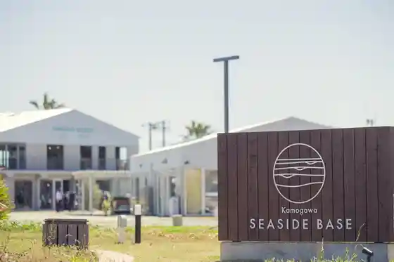
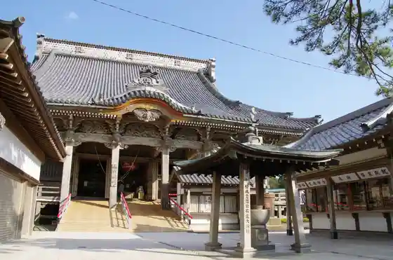
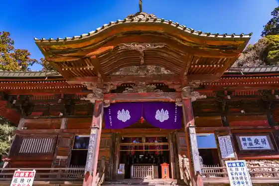
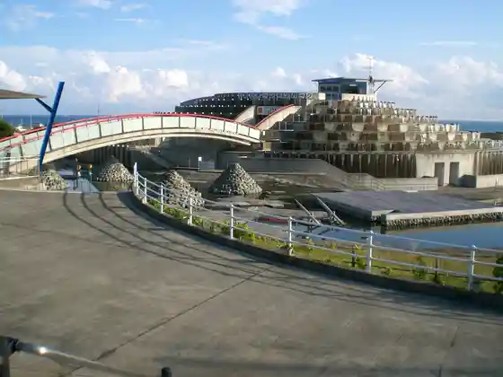

Kamogawa Shiiwarudo
Kamogawa, Chiba · 04-7093-4803 · Official / source link
Kamogawa SEASIDE BASE
Kamogawa, Chiba · 04-7096-7676 · Official / source link

Omoto Yama Tanjo Tera
Kamogawa, Chiba · 04-7095-2621 · Official / source link

Omoto Yama Kiyosumi Tera
Kamogawa, Chiba · 04-7094-0525 · Official / source link

Roadside Station Kamogawa Oshan Park
Kamogawa, Chiba · 04-7096-1911 · Official / source link

Niemon Shima
Kamogawa, Chiba · 04-7092-3456 · Official / source link
Tai no Ura Yuransen
Kamogawa, Chiba · 04-7095-2318 · Official / source link
Uomi Tsuka Lookout
Kamogawa, Chiba · 04-7093-1678 · Official / source link
Ta Umi Furawa Isozuri Ri Center
Kamogawa, Chiba · 090 2677 1653 · Official / source link
Kinosaki Beach
Kamogawa, Chiba · 04-7093-7837 · Official / source link
Michi no Minato
Kamogawa, Chiba · 0120-103-042 · Official / source link
Ta Umi Coast (Ta Umi Beach)
Kamogawa, Chiba · 04-7093-7837 · Official / source link
Shiisaidoterasu Chiba Kamogawa
Kamogawa, Chiba · 050-3198-5846 · Official / source link
Shiho Ki Fudo Taki
Kamogawa, Chiba · 04-7093-7837 · Official / source link
Shiosai Market
Kamogawa, Chiba · 04-7099-2200 · Official / source link
Hana Aji Ketsu
Kamogawa, Chiba · 04-7099-8073 · Official / source link
Kasutera Workshop Ruashieia
Kamogawa, Chiba · 04-7099-8090 · Official / source link
Kamogawa Man Shuku Some Suzu Some
Kamogawa, Chiba · 04-7092-1531 · Official / source link
Kominato Satomi Gakko
Kamogawa, Chiba · 04-7096-6606 · Official / source link
Uchiura Coast (Uchiura Beach)
Kamogawa, Chiba · 04-7093-7837 · Official / source link
Maehara Yoko Nagisa Coast (Maehara Beach)
Kamogawa, Chiba · 04-7093-7837 · Official / source link
Oyama Tera Fudo Mikoto
Kamogawa, Chiba · 04-7098-0178 · Official / source link
Kamogawa Uoruato
Kamogawa, Chiba · 04-7093-7837 · Official / source link
Uchiura Yamagata Tami Forest
Kamogawa, Chiba · 04-7095-2821 · Official / source link
2026 Nendo Chibakenmin Shi Town Village Kansha Gekkan / Kamogawa Shiiwarudo
Kamogawa, Chiba · 04-7093-4803 · Official / source link
Emi Beach
Kamogawa, Chiba · 04-7093-7837 · Official / source link
Hisashi Mankame Kameda Shuzo
Kamogawa, Chiba · 04-7097-1116 · Official / source link
Iki Iki Kominato Uopoto
Kamogawa, Chiba · 04-7095-2891 · Official / source link
JA Guriin Kamogawa Mise
Kamogawa, Chiba · 04-7093-3406 · Official / source link
Kameya Main Shop
Kamogawa, Chiba · 04-7093-3281 · Official / source link
Teyaki Kiokaki Takanashi
Kamogawa, Chiba · 04-7093-5225 · Official / source link
Nagai Katsuobushi Mise
Kamogawa, Chiba · 04-7092-0057 · Official / source link
Komeya Shinzo
Kamogawa, Chiba · 04-7094-5588 · Official / source link
Nitcho Tera
Kamogawa, Chiba · 04-7094-0132 · Official / source link